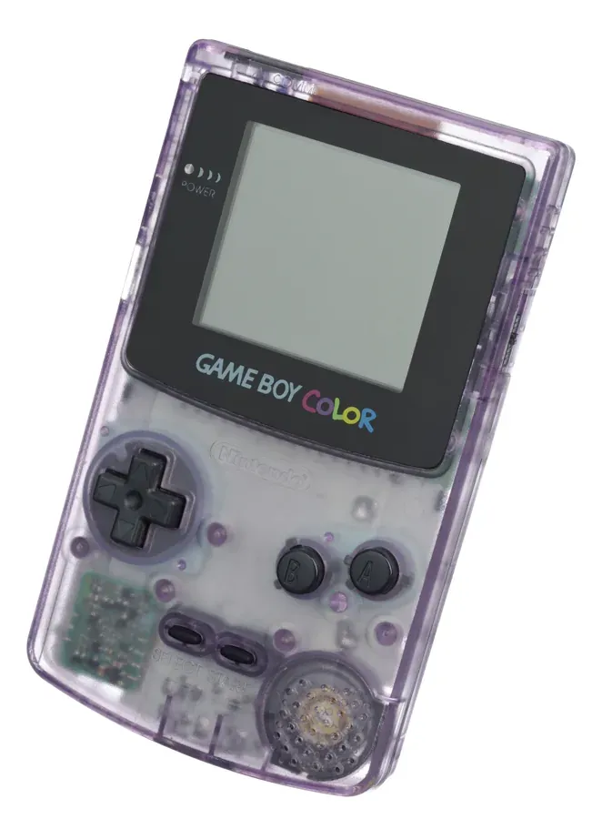

1998 年发布
Game Boy Color
彩色掌机 · 向下兼容GB · 宝可梦金/银大爆发
56色
同屏显示
32,768色
最大色库
2节
AA电池
1998
发布年份
📖 历史与背景
1998年10月21日，任天堂在日本推出Game Boy Color，这是Game Boy系列首款彩色屏幕掌机。GBC使用彩色TFT LCD屏幕，可以同时显示56种颜色（从32,768色彩库中选取），向下兼容所有Game Boy黑白游戏——玩家把老GB游戏卡插进去，GBC会自动为黑白游戏添加预设的色彩。
GBC的发布恰逢宝可梦的全球爆发期。1999年发行的《精灵宝可梦 金/银》是GBC平台上最畅销的游戏，也是整个宝可梦系列最重要的一代——新增了100只宝可梦、昼夜系统、繁殖机制、以及对战塔等游戏模式。
GBC在日本和欧美市场都取得了极大的成功，生命周期内软件销售极为强劲。GBC并不是Game Boy的"换代"产品，而是一个增强版——但它的彩色屏幕让掌机游戏体验迈入了新纪元。
⚙️ 硬件规格
CPU
Sharp SM83 定制8位 (8.39MHz)
屏幕
2.3寸 TFT LCD 160×144
色数
同屏56色（库32,768色）
内存
32KB RAM + 16KB VRAM
红外
红外通信端口（无线联机）
电池
2节AA电池（约10-20小时）
尺寸
133×75×27mm
重量
约138g（含电池）
🎮 经典游戏阵容
宝可梦 金/银
1999 · RPG
最佳宝可梦之一，双地图+昼夜
塞尔达传说：不可思议的果实
2001 · 动作冒险
双版本互联，Capcom开发
瓦力欧乐园3
2000 · 平台
贪财瓦力欧的冒险
勇者斗恶龙III 重制
2000 · RPG
经典RPG的彩色重制版
大金刚GB版
1999 · 平台
Rare开发，全新关卡设计
游戏王4
1999 · 卡牌
三版本分开发售
超级马里奥DX
1999 · 平台
GB《马里奥大陆2》的彩色重制
侍魂 天草降临
2000 · 格斗
SNK掌机移植之作
🏆 市场表现与影响
- 销量（含GB系列合计）：GB/GBC合计1.18亿台，任天堂第一个"亿台俱乐部"成员
- 宝可梦金/银：2300万份销量（GBC平台最高），至今被视为宝可梦系列的巅峰之作
- 红外联机：GBC顶部内置红外通信口，支持无需线缆的无线联机——但只能直线通信、距离短、实际使用率不高
- 向下兼容着色：GBC会自动将GB黑白游戏着色，最多支持4种颜色的自动映射，极富创意
- 口袋相机：GBC推出了世界上最小的数码相机外设——Game Boy Camera，可拍照、编辑、打印贴纸
💡 趣闻与冷知识
- GBC的8MHz CPU速度是原版GB的两倍——所以GBC专属游戏运行更流畅，但向下兼容时GB游戏速度不变（保持4.19MHz）
- GBC的红外端口主要用于《宝可梦 金/银》中的"无线通信"——两只GBC靠近即可交换宝可梦，不用连线
- Game Boy Camera的外接打印机（Game Boy Printer）使用热敏纸，虽然画质粗糙但曾经风靡日本校园
- 宝可梦金/银的CD-ROM版OST（游戏原声带）是20世纪最后一张百万销量游戏原声带
- GBC的"着色器"技术没有针对每款GB游戏单独优化，而是使用十几种通用调色方案在卡带中自动匹配——效果时好时坏